Selected Work
Problem
Capstone team project: a calorie tracking web app where users can log meals, track macros, record weigh-ins, set goals, and see progress on interactive dashboards (Chart.js).
What we built together (grad school)
We split ownership across the stack and shipped to deployment as a team. My contributions included:
- Product direction and requirements with the group.
- Use case, data flow, and state chart diagrams.
- Backend/database work and testing—not only front-end.
- Client-side MVC structure and Chart.js for nutrition and weekly progress views.
We turned in a working app with documentation and clear responsibilities—real collaboration, not solo heroics.
What I changed after launch (chronological)
After graduation, the canonical repo stayed on my teammate’s GitHub (Mchavez31/CaloriEat). I wanted to keep improving the product and host a live demo from my account, so I forked the project to jpdm07/CaloriEat and treated that fork as my working branch for post-capstone work.
February 2026 — housekeeping for GitHub Pages: Renamed the modular entry file to a standard index.html so hosting and routing behave the way people expect when they clone or open the Pages site.
April 2026 — UI and product polish: Improved help content and layout, tightened insights, added share-link behavior, refined food search, and updated the footer copyright year so the app reads as actively maintained.
April 2026 — clearer first visit: If someone hits the root or index while not signed in, they’re redirected to the welcome flow (sign in or try as guest) instead of dropping into the app shell—so first-time visitors and recruiters get an obvious front door.
Before and after (post-grad pass)
Capstone handoff: entry through Index_Modular.html, no welcome-first flow, pre–April 2026 UI. Snapshot at fb29950 on my fork (clone that commit to run it locally). Pages always tracks main, so there’s no separate hosted “old” build—use Capstone snapshot below to browse the frozen tree.
Standard index.html, welcome redirect for signed-out visitors, UI polish, and merged team repo. Then → now below is the GitHub compare for the full delta.
Pull requests back to the team repo
My partner wanted these updates on the original repository, not only on my fork. I opened pull requests from jpdm07/CaloriEat into Mchavez31/CaloriEat; he reviewed and merged that work in April 2026. The same build now ships from both GitHub Pages hosts; use the Live demo link below (mirrored on my teammate’s account as well). For future work I still use fork → PR → merge so history stays shared—open a compare from main on GitHub anytime you need a new PR.
Outcome
The capstone proves I can build and integrate on a team; the post-grad pass shows I can iterate, document intent in commits, and land changes through review and merge the way real open-source and company workflows expect.
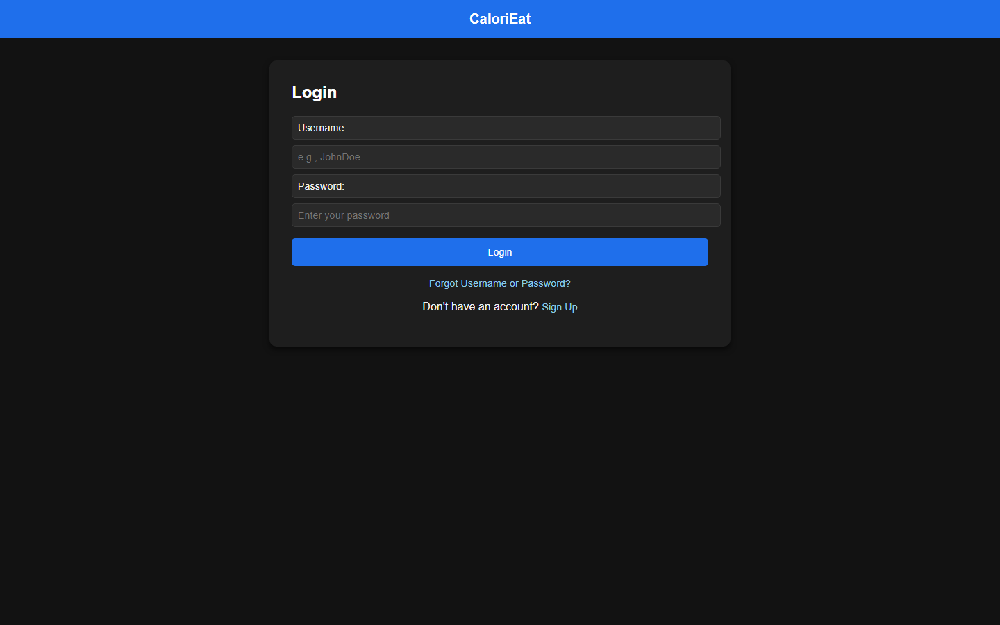
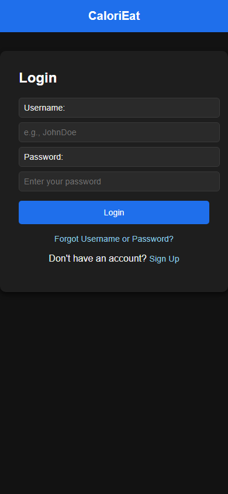
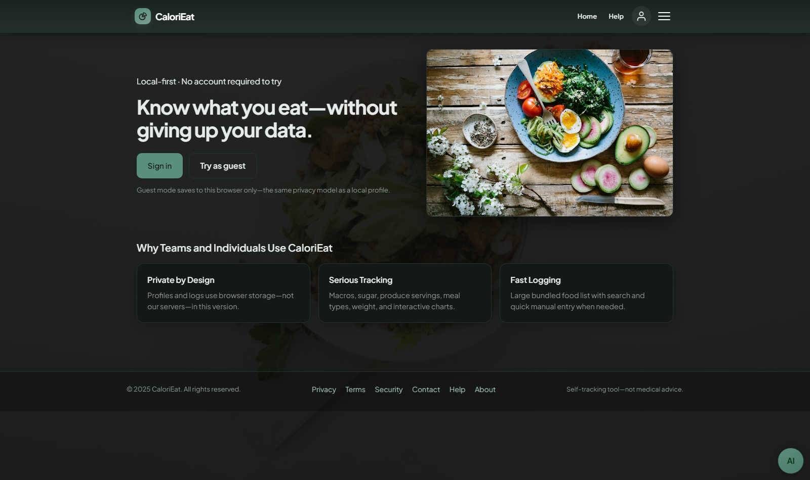
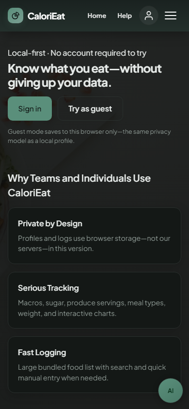
Context
Nonprofit-style rescue site built on WordPress.org with Elementor: I laid out the main pages (home, about, contact) and handled visuals, not just dropping in a template. The ideas trace back to volunteering with Sierra Overlook Animal Rescue (their live site is on Wix)—I wanted a WordPress path I could own end to end.
Where I started: I first put up a quick experiment on WordPress.com (janechavez5.wordpress.com) in about four hours to learn the hosted ecosystem, theme constraints, and how fast I could ship rescue-style messaging. It was never meant to be final—it was a low-risk way to practice before moving to self-hosted WordPress.
From .com to janechavez.org
- Platform: WordPress.com (hosted, theme-led) → WordPress.org + Elementor for section-level control, custom layout, and a repeatable component workflow.
- Domain & brand: Subdomain on wordpress.com → custom domain with Happy Tails Rescue identity (logo, orange/teal palette, typography tuned for the nonprofit feel).
- Depth: The .com pass proved I could stand up pages quickly; the janechavez.org build is where I added structured “what we do,” pet-style sections, and a real SureForms contact flow—closer to how I’d present a rescue to the public.
What I Built
- Hero with background image, headline, and primary CTA.
- “What we do” block: three columns for rescue, rehabilitate, and rehome.
- Meet Our Animals section with pet profiles and Adopt Me buttons.
- Contact page with SureForms contact form and location info.
- Custom HTR logo and brand identity in warm orange and teal.
Outcome
janechavez.org is a working prototype—strong enough to show layout, branding, and forms in a nonprofit context, but not a “complete” operational rescue site yet.
Still in progress: Compared with what a busy nonprofit often needs (and what I’ve seen on Sierra Overlook’s site), I haven’t added sections like a shop/merch flow, an events calendar, or other program-specific pages. Calling that out on purpose: recruiters see the Elementor build as the current direction, and the WordPress.com link as the fast first sketch—not two competing “finished” products.
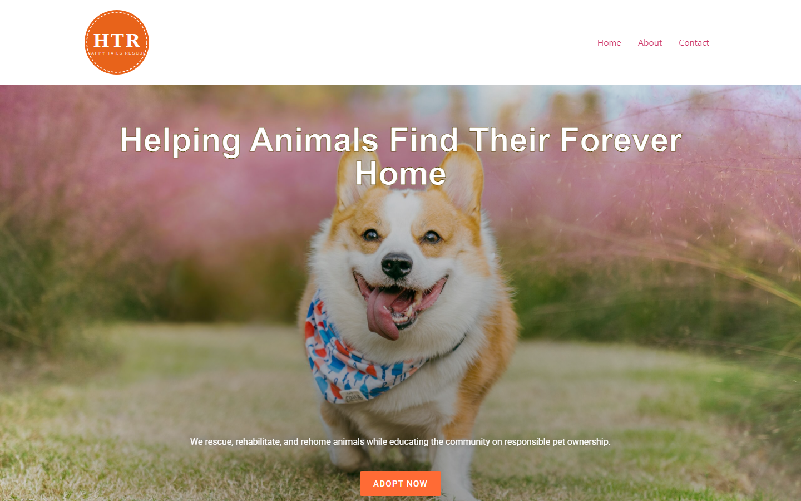
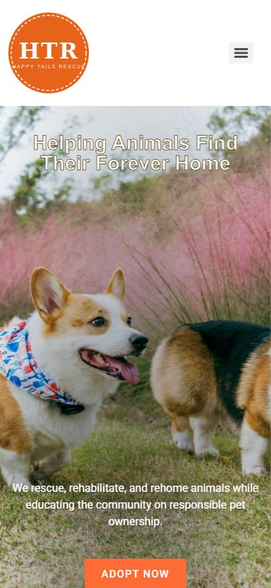
Problem
I needed one place that showed how I think about UX and that I can actually build what I design, without hiding behind a page builder. I also wanted it to feel like my space: something that reflects my taste and how I like to present myself, not a generic layout that could belong to anyone.
My Role
- Owned layout, type, and visual hierarchy start to finish.
- The first live versions ran on Bootstrap 5, which got me online fast but never quite felt like my handwriting. I removed Bootstrap and rewrote spacing, type, and components in my own CSS so the site could match my Figma direction and read as something I customized, not something I rented from a framework.
- Semantic HTML, heavy custom CSS (grid, flex, motion, breakpoints), and plain JavaScript. No React on this site.
- JS for the canvas background, opening transition, scroll bits, mobile nav, résumé page behavior, cursor quirks on desktop, and the draggable gem in the hero (vanilla, kept readable on purpose).
- Tried to keep accessibility and performance in mind (reduced motion, reasonable canvas work).
- Started from low- and high-fi wireframes in Figma.
Before and after (same repo)
Early versions used Bootstrap 5. The mockup on the right matches the framed screenshots on my other projects: real desktop and narrow-viewport captures from the archived build. For a live HTML preview or the raw source file, use the links below.
Dropped the Bootstrap CSS/JS bundles, rebuilt the shell (nav, sections, project rows, buttons) by hand, then layered in the canvas background, entrance animation, and the smaller JS touches I actually want on the page. The new look gives me room to express myself: color, motion, and little details that feel closer to how I’d design if we were sitting down together.
If you want the whole rewrite in one place, GitHub shows it as this single revamp commit (diff is big on purpose).
Outcome
Hosted on GitHub Pages. Classmates and mentors said it was easy to read and felt polished. For me it’s proof the JavaScript here is real work, not just static layout, and the whole thing finally feels like something I’d stand behind as mine.
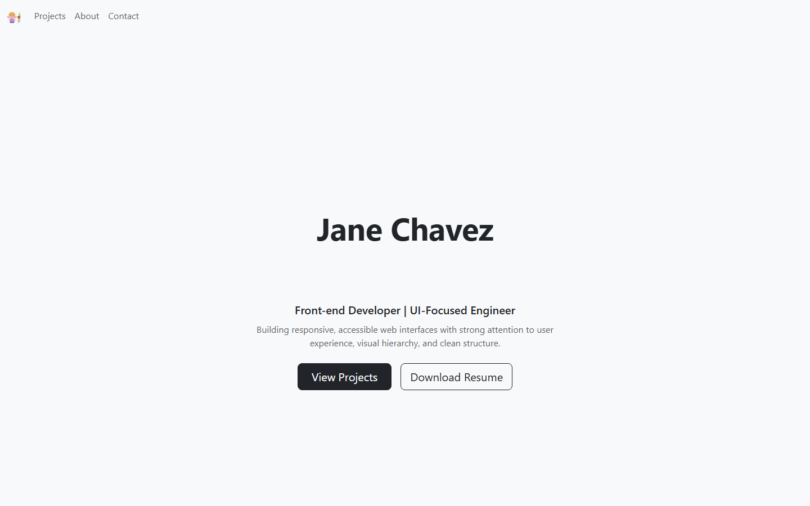
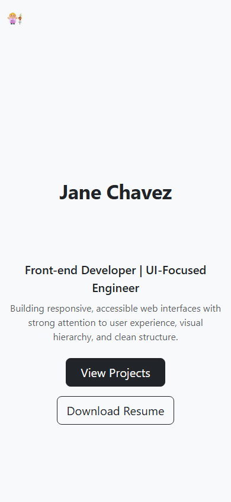
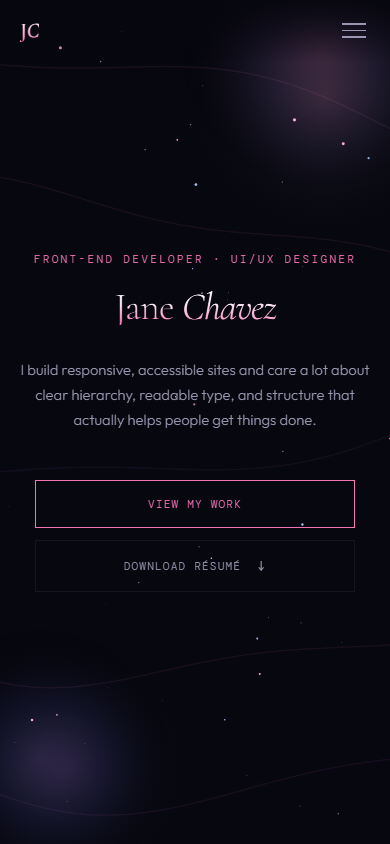
Problem
I wanted one strong hero treatment I could show in interviews: clear type, spacing, and a device mockup that looks intentional, not thrown together.
My Role
- Desktop hero layout in Figma.
- Typography scale and spacing I could reuse elsewhere.
- Dropped a project screenshot into phone/desktop frames.
- Thought about how it would reflow and exported assets at usable resolution.
Outcome
A tight Figma file plus prototype links. Good shorthand for “I can own UI craft” when people ask for design samples.
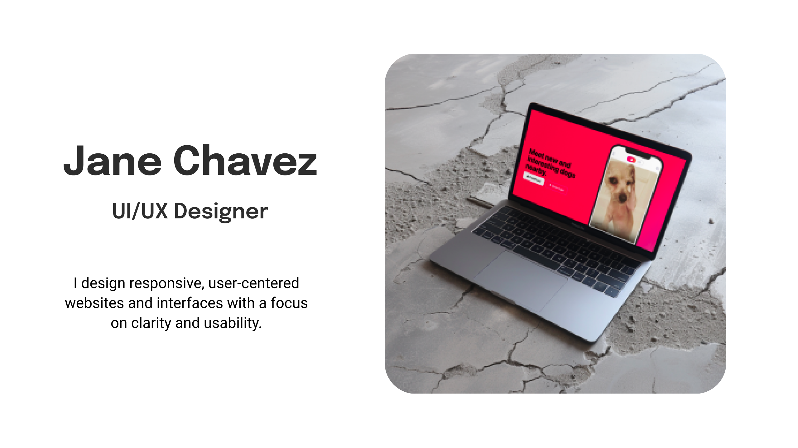
Problem
Many dog owners want a fun, safe way to meet other dog owners for socializing, playdates, and community events. This concept app explores that space with a playful, engaging UI.
Context: I learned this build through a Udemy course. The page uses Bootstrap for layout, grid, and components, with HTML, CSS, and JavaScript on top—so it’s clear which tools shaped this piece versus hand-rolled projects elsewhere on the site.
My Role
- Worked through the Udemy project end to end and kept Bootstrap in the stack for structure and styling.
- Added swipe-style and other interactions in JavaScript (demo / prototype level).
- Tuned responsive behavior using Bootstrap’s grid and utilities, then iterated in code until the UI felt fun and clear.
Outcome
A playful live demo that shows I can follow a structured course, use Bootstrap in a real layout, and still ship something cohesive in the browser.

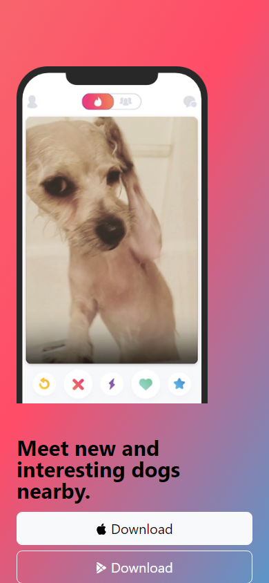